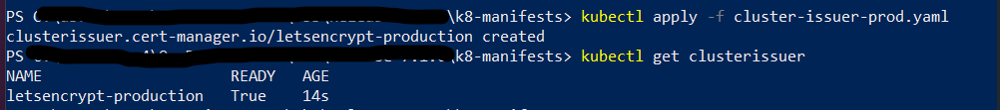
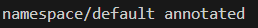

Initial Kubernetes deployment
This page explains how to deploy the core Kubernetes infrastructure services that NBS 7 requires before you install application components. Complete the sections in order. After you complete these steps, proceed to Keycloak Installation.
On this page
- Bootstrap Kubernetes
- Create secrets in your cluster
- Deploy Traefik ingress controller
- Configure cert-manager (optional)
- Configure Linkerd and Cluster Autoscaler
Bootstrap Kubernetes
- Download the Helm configuration package from the CDCgov/NEDSS-Helm repo on Github. Be sure to go through the v7.12.0 release page to see what’s included.
- Open a terminal (bash, macOS Terminal, CloudShell, or PowerShell) and unzip the downloaded file.
- All helm commands should be executed from the charts directory. Change directory to where you unzipped the helm charts folder
<Helm_Dir>/charts.
Create secrets in your cluster
After you download and unzip the Helm configuration package, create the Kubernetes secrets that your cluster uses to connect to its databases. This section explains how to populate the nbs-secrets.yaml manifest with your environment-specific database credentials and deploy it to the cluster. After you complete this step, move on to deploy the Traefik ingress controller.
- Obtain the sample Kubernetes manifest to create secrets expected to be available on the cluster from
k8-manifests/nbs-secrets.yaml. -
Replace string values wherever there is an
EXAMPLE_:Parameter Template Value Example/Description odse_url jdbc:sqlserver://EXAMPLE_DB_ENDPOINT:1433;databaseName=EXAMPLE_ODSE_DB_NAME;encrypt=true;trustServerCertificate=true;jdbc:sqlserver://mydbendpoint:1433;databaseName=nbs_odse;encrypt=true;trustServerCertificate=true;rdb_url jdbc:sqlserver://EXAMPLE_DB_ENDPOINT:1433;databaseName=EXAMPLE_RDB_DB_NAME;encrypt=true;trustServerCertificate=true;jdbc:sqlserver://mydbendpoint:1433;databaseName=nbs_rdb;encrypt=true;trustServerCertificate=true;odse_user EXAMPLE_ODSE_DB_USERODSE database user odse_pass EXAMPLE_ODSE_DB_USER_PASSWORDODSE database password rdb_user EXAMPLE_RDB_DB_USERRDB database user rdb_pass EXAMPLE_RDB_DB_PASSWORDRDB database password srte_user EXAMPLE_SRTE_DB_USERSRTE database user srte_pass EXAMPLE_SRTE_DB_PASSWORDSRTE database password investigation_reporting_user EXAMPLE_INVESTIGATION_REPORTING_DB_USERRTR investigation reporting database user investigation_reporting_pass EXAMPLE_INVESTIGATION_REPORTING_DB_PASSWORDRTR investigation reporting database password ldfdata_reporting_user EXAMPLE_LDFDATA_REPORTING_DB_USERRTR ldfdata reporting database user ldfdata_reporting_pass EXAMPLE_LDFDATA_REPORTING_DB_PASSWORDRTR ldfdata reporting database password observation_reporting_user EXAMPLE_OBSERVATION_REPORTING_DB_USERRTR observation reporting database user observation_reporting_pass EXAMPLE_OBSERVATION_REPORTING_DB_PASSWORDRTR observation reporting database password organization_reporting_user EXAMPLE_ORGANIZATION_REPORTING_DB_USERRTR organization reporting database user organization_reporting_pass EXAMPLE_ORGANIZATION_REPORTING_DB_PASSWORDRTR organization reporting database password person_reporting_user EXAMPLE_PERSON_REPORTING_DB_USERRTR person reporting database user person_reporting_pass EXAMPLE_PERSON_REPORTING_DB_PASSWORDRTR person database password post_processing_reporting_user EXAMPLE_POST_PROCESSING_REPORTING_DB_USERRTR post processing reporting database user post_processing_reporting_pass EXAMPLE_POST_PROCESSING_REPORTING_DB_PASSWORDRTR post processing database password -
Deploy the secrets to the cluster:
kubectl apply -f k8-manifests/nbs-secrets.yaml
Deploy Traefik ingress controller
After you create and deploy your Kubernetes secrets, set up the Traefik ingress controller. This section explains how to install Traefik Custom Resource Definitions (CRDs), deploy Traefik for AWS or Azure, deploy NBS ingress resources, and create the DNS records your cluster needs to route traffic. After you complete these steps, configure Cert Manager to manage TLS certificates for your cluster.
Install Traefik CRDs
Install Traefik CRDs before installing the controller. These enable Traefik-specific resources such as IngressRoute and Middleware.
helm repo add traefik https://traefik.github.io/charts
helm repo update
helm install traefik-crds traefik/traefik-crds --namespace traefik --create-namespace
Deploy the Traefik controller
The Traefik Helm charts are located in the NEDSS-Helm repository. Traefik uses the values in charts/traefik/values.yaml (AWS) or charts/traefik/values-azure.yaml (Azure) from the downloaded chart package. These values are preconfigured to set up Prometheus metrics, configure Linkerd sidecar injection, set timeouts, and instruct the Traefik controller to create an Amazon Elastic Kubernetes Service (Amazon EKS) Network Load Balancer (NLB) or Azure Kubernetes Service (AKS) internal load balancer.
-
To create the Traefik Controller within Kubernetes, choose the appropriate command for your environment:
- Amazon Elastic Kubernetes Service (Amazon EKS):
helm install traefik traefik/traefik --namespace traefik --create-namespace -f ./traefik/values.yaml --skip-crds- Azure Kubernetes Service (AKS):
helm install traefik traefik/traefik --namespace traefik --create-namespace -f ./traefik/values-azure.yaml --skip-crds -
Monitor the deployment status:
kubectl --namespace traefik get services -o wide -w traefikUse
Ctrl+Cto exit if the command is still running. - In the AWS Management Console or Azure portal, verify that a load balancer was created and that its target groups point to the Amazon EKS or AKS cluster.
-
Confirm the Traefik pod is running. The pod should show
2/2for the Traefik and Linkerd sidecar containers:kubectl get pods -n traefik
Deploy NBS ingress resources
The nbs-ingress chart manages all NBS 7 application routing, including Keycloak, NBS Gateway, data ingestion services, and middleware. Deploy it independently of the application charts.
- Locate the Traefik Helm charts in the NEDSS-Helm repository. Update the values in
charts/nbs-ingress/values.yamlwith your environment-specific hostnames, or pass them as--setflags. -
Deploy the ingress resources:
helm install nbs-ingress ./nbs-ingress -n default -f ./nbs-ingress/values.yamlOr with inline hostname overrides:
helm install nbs-ingress ./nbs-ingress -n default \ --set appHost=app.SITE_NAME.EXAMPLE_DOMAIN \ --set dataHost=data.SITE_NAME.EXAMPLE_DOMAIN -
Verify the ingress resources were created:
kubectl get ingress -A kubectl get ingressroute -A kubectl get middleware -A
Create DNS records
Create A or CNAME records in your DNS service (for example, Route 53 for Amazon EKS or Azure DNS for AKS) pointing the following subdomains to the load balancer.
-
Find the load balancer address:
kubectl get svc traefik -n traefik -
Create CNAME, A, or ALIAS records that point to the correct hostname. For Amazon EKS,
EXTERNAL-IPis an NLB hostname (for example,xxxxxx.elb.us-east-2.amazonaws.com). For Azure,EXTERNAL-IPis an IP address.NiFi has known security vulnerabilities. Only add a NiFi DNS entry if you need to administer it directly. Omit it otherwise.
For the following example hostnames, replace
site_name.example_domainwith your site and domain names.Subdomain Template Example NBS application app.site_name.example_domain.comapp.fts3.nbspreview.comData services data.site_name.example_domain.comdata.fts3.nbspreview.comNiFi (use with caution) nifi.site_name.example_domain.comnifi.fts3.nbspreview.com -
Verify DNS propagation:
dnslookup app.SITE_NAME.EXAMPLE_DOMAINThe resolved address should match the Traefik load balancer.
Verify the deployment
Open the application in a browser and verify the following:
- Keycloak login page loads with full styling (CSS, JS)
- Authentication works (login and logout)
- NBS 7 application pages load correctly
- Data ingestion endpoints respond
- Static assets load with correct caching headers
Verify response headers in browser DevTools (F12 > Network tab):
X-Frame-Options: AllowCross-Origin-Opener-Policy: same-originCache-Control: max-age=1209600, immutable(on static assets such as.jsand.cssfiles)
Troubleshoot Traefik
If issues persist after initial troubleshooting, contact support at nbs@cdc.gov.
Access the Traefik dashboard
The Traefik dashboard lets you inspect routers, services, and middleware:
kubectl port-forward -n traefik deployment/traefik 9000:9000
Open http://localhost:9000/dashboard/ in your browser.
View Traefik logs
kubectl logs -n traefik deployment/traefik -c traefik --tail=100
Common Traefik issues
- 418 “I’m a Teapot” response: No router matched the request. Verify that
ingressClassName: traefikand the hostname match. - 502 Bad Gateway: The backend service is not running or there is a port mismatch. Run
kubectl get svcandkubectl get endpointsto check. -
TLS certificate errors: Verify the TLS secret exists:
kubectl get secret <secretName> - Traefik pod showing 1/2: The Linkerd sidecar is not injecting. Verify
linkerd.io/inject: enabledis set in Traefik values. - Traefik pod on wrong node (AKS with Windows nodes): Add
nodeSelector: kubernetes.io/os: linuxto Traefik values.
Configure cert-manager (optional)
cert-manager creates TLS certificates for workloads in your cluster and renews the certificates before they expire. By default, cert-manager uses Let’s Encrypt as the certificate authority for NiFi and modernization-api services.
If you have manual certificates, skip steps 1 - 4 and store your certificates in Kubernetes secrets instead. For more information, see the Kubernetes Secrets documentation.
-
Locate the cluster issuer manifest at
k8-manifests/cluster-issuer-prod.yamlin the NEDSS-Helm repository. -
In
cluster-issuer-prod.yaml, update the email address to a valid operations address. Let’s Encrypt uses this address to notify you of upcoming certificate expirations if automatic renewal stops working. -
Apply the manifest:
cd <HELM_DIR>/k8-manifests kubectl apply -f cluster-issuer-prod.yaml -
Verify the cluster issuer is deployed and in a ready state:
kubectl get clusterissuerYou should see
letsencrypt-productionwith aREADYstatus ofTrue.
Configure Linkerd and Cluster Autoscaler
Annotate the default namespace for Linkerd
Linkerd must be installed as part of the Terraform infrastructure deployment before completing these steps. Annotating the default namespace enables Linkerd mTLS on all microservices deployed in the following steps.
-
Annotate the default namespace:
kubectl annotate namespace default "linkerd.io/inject=enabled"
-
Verify the annotation is in place:
kubectl get namespace default -o=jsonpath='{.metadata.annotations}'The output should include
{"linkerd.io/inject":"enabled"}. -
If this is an update rather than a new install, restart the application pods in the default namespace so that Linkerd sidecars are injected. Restarted pods should show
2/2in the ready column.
Install the Cluster Autoscaler
The Cluster Autoscaler is a Helm chart that horizontally scales cluster nodes as needed. Update the following values in charts/cluster-autoscaler/values.yaml with values from the AWS console:
clusterName: <EXAMPLE_EKS_CLUSTER_NAME>
autoscalingGroups:
- name: <EXAMPLE_AWS_AUTOSCALING_GROUP_NAME>
maxSize: 5
minSize: 3
awsRegion: us-east-1
Install the chart:
helm repo add autoscaler https://kubernetes.github.io/autoscaler
helm upgrade --install cluster-autoscaler autoscaler/cluster-autoscaler \
-f ./cluster-autoscaler/values.yaml \
--namespace kube-system
Verify the pod is running:
kubectl --namespace=kube-system get pods \
-l "app.kubernetes.io/name=aws-cluster-autoscaler,app.kubernetes.io/instance=cluster-autoscaler"